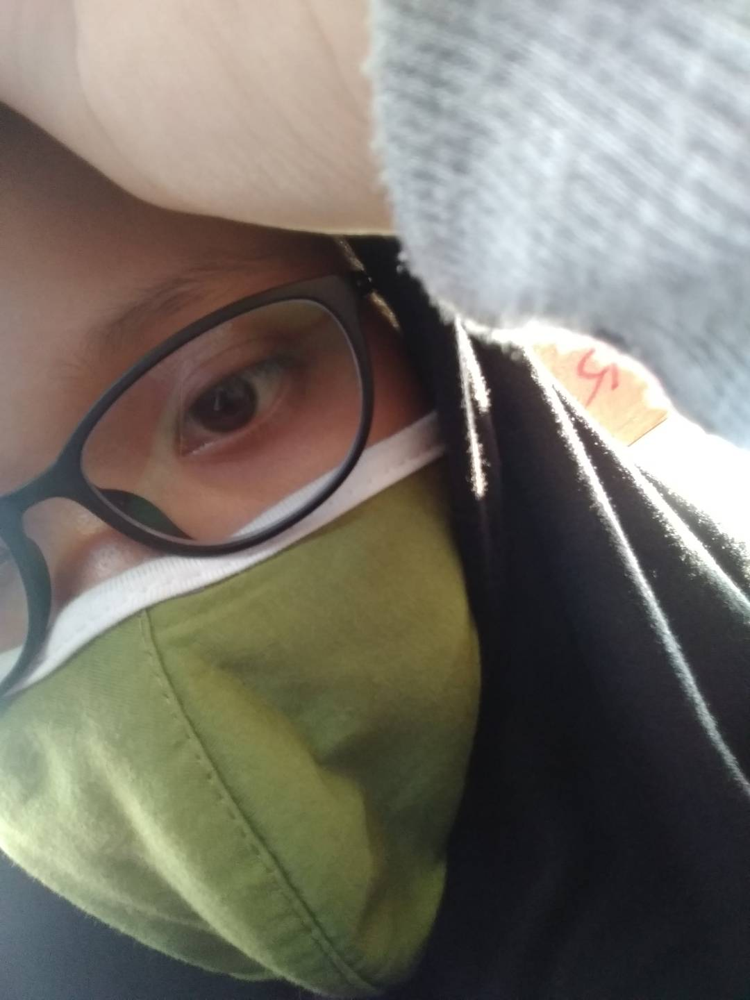

Home
Know Me More
Contact
Hello, I'm Yudin

. I like learning new things. Blue is my favourite colour. Taurus is my horoscope. Everyone says that I'm such an confident person. But the another half says